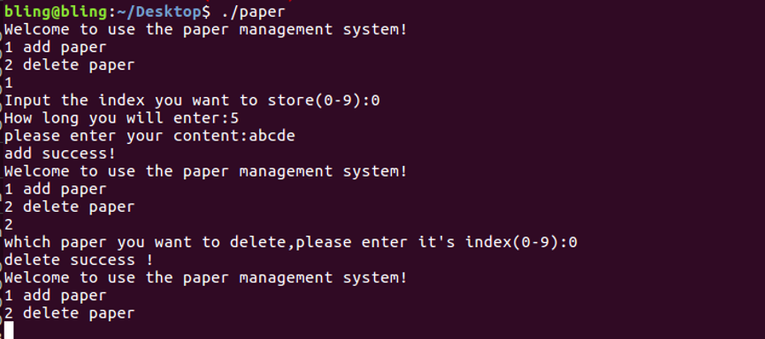
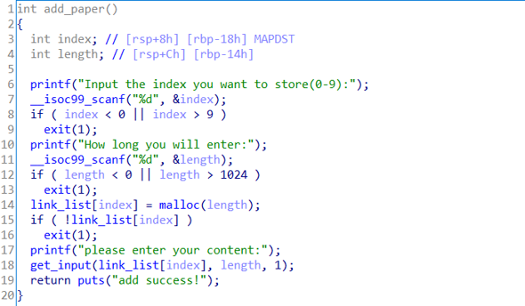

ctf堆入门 - paper
1、寻找漏洞点
拿到ELF后，先看看它的一些信息。
- File查看文件格式
- Checksec查看开启的安全编译选项
- 运行一下看看都有哪些功能
- 使用IDA看看伪代码，理解整个二进制程序的功并查找漏洞点。
64位程序，动态链接，没有去符号表，got表可写可读，开启栈不可执行和canary保护，没有做地址随机化。

程序提供两个功能，增加paper和删除paper，paper中可以存放指定大小的数据。
IDA查看程序实现，关注add_paper和delete_paper。

Add paper中申请一块堆，然后存放数据。这个函数实现各项检查都做得很好，没发现漏洞点。
Delete paper中free掉指向堆的link_list[index]指针后，没有将该指针置NULL。导致一个悬空指针的产生《对几类危险的指针，见本文的记录——三类漏洞指针》。
2、利用分析
堆管理机制中，对于较小的堆块，采用fastbin的方式进行回收（本题中要求堆块小于0x80，这样free操作之后，该chunk会被链接到fastbin上）。本题中，申请的最大堆内存为1024Byte，所以要控制申请的堆大小不超过0x80。
根据fastbin的单向链表及其他特性《见记录——fastbin attack》，我们需要通过double free在fastbin的链表中构造一个环（如下图）。然后申请一个与chunk1、chunk2相同大小的堆，此时会返回chunk1给线程使用，于是可以更改chunk1中的数据（如将“fd”位置处的值改为我们的目标地址）。下一次malloc时分配chunk2，再下一次分配时依然是chunk1，但此时main_arena已经指向目标地址处（如果目标地址合理）了。此时再malloc一次，就可以实现对该地址空间写任意值了。
这样接下来的目标就是，往哪里写才能getshell呢？
要getshell就必须控制指针的执行流，使其执行我们构造的提权函数或者直接去执行该二进制文件中已有的提权函数。
（1）寻找或构造提权函数（这里以ELF中自带提权函数为例）
回到ELF文件，搜索“/bin/sh”或system函数，看是否存在这种后门，使利用更加简单。在string窗口中搜索“/bin/sh”，查看其引用gg，发现gg中会调用system(“/bin/sh”)。
至此，我们的提权函数就找到了！那么怎样才能让程序流乖乖地来执行我们的提权函数呢？
（2）替换函数内容或替换函数指针（这里以替换函数指针为例）
控制执行流的做法通常是将原本要执行的函数进行替换，替换函数指针或者替换掉函数内容。
这里我们已经有了一个提权函数gg，且ELF并未开启地址随机化，那么首先想到的是控制某个函数指针指向gg。也就是说要把gg函数的地址0x00400943写到某个会被当做“函数指针”的地址0x12345678上去，这样当原本程序流从该0x12345678上取值并跳转执行时，就会执行gg函数了。
往哪里写这个gg函数地址呢？回到ELF文件，逆向查看伪源码，源码中并未定义有用的函数指针，但是栈上的返回地址可以作为考虑的一个选项。另外一种方法，就是去覆写got表了，具体做法是更改该got表的某个表项内地址为gg函数地址。这样当程序执行到该got表中函数（如printf、puts、gets等等）时，便会去执行我们的提权函数啦。
那么最后，怎么获取到got表的地址以及该got条目的地址呢？由于本题的ELF未开启地址随机化，所以可直接通过IDA查看got表的起始地址以及各表项的具体地址。然而，对于开启随机化的ELF，就需要我们想办法去泄露got表地址了，这个方法在这篇文章中不予讨论。
可以看到该ELF的got表条目如下，got表地址为0x00602000。
到这里利用思路基本明确了，就是将chunk1中fd的地址替换成got表中某一项（会执行到的函数）的值，然后将该项的值改成gg函数地址。
那么这个got表中的地址需不需要满足什么条件呢？答案是必须的！main_arena把chunk从fastbin链表上卸下来的时候，会去检查该chunk中fd指向的另一chunk是否为合法chunk。合法chunk的特征是什么呢？就是目标chunk数据区之前的八个字节（64位下）必须是合法的size值，标志这个chunk的大小。Ps：其实只要这八个字节的低四字节满足就可以了。
因此我们需要在上述got表中，寻找满足这种条件的地址。如下图，标记颜色的五个部分满足低四个字节为0x00000040或0x00000060，这可以是一个合法的size值。
但是选哪个作为目标地址呢，还需要结合got表项进行考虑。
- 选0x602002处作为chunk的size部分
- 选0x60201a处作为chunk的size部分
- 选0x602032处作为chunk的size部分
- 选0x60203a处作为chunk的size部分
如果我们想覆写printf函数，即0x602040处的值，那么得使用0x602032处作为chunk的size部分。此时整个chunk的起始地址是0x60202a。可任意写的数据区从0x60203a开始。由于system函数在0x602038至0x60203f区间，因此0x60203a至0x60203f的值需要保持不变。需要将0x602040至0x602047的值改为gg函数地址。因此需要往0x60202a写入的内容为：\x40\x00\x00\x00\x00\x00+gg地址
因为最终选择的chunk size（包含chunk头）为0x40，所以申请的堆内存大小必须是0x30。接下来可以写利用代码了。
3、EXP
1 | from pwn import * |
执行成功，getshell！
4、记录
三类漏洞指针
1、空指针：指向NULL的指针，若使用指针前未判断其是否为空，可导致程序崩溃。
2、悬空指针：也称迷途指针，指向一段已释放的内存单元的指针，可导致UAF等漏洞。
3、野指针：指向一段未初始化内存单元的指针。
fastbin attack
https://ctf-wiki.github.io/ctf-wiki/pwn/linux/glibc-heap/fastbin_attack-zh/
GOT表与PLT
https://blog.csdn.net/qq_18661257/article/details/54694748
https://www.cnblogs.com/pannengzhi/p/2018-04-09-about-got-plt.html
pwntools的使用
https://www.cnblogs.com/Ox9A82/p/5728149.html
5 新机搭建pwn环境
由于这题必须在ubunut1804环境下利用，所以整个pwn的做题环境又需要重新搭一遍。为了以后再遇到这种情况时，可以迅速完成环境搭建，这里做一下记录。
安装pwntools
1 | apt-get update |
安装checksec
1 | git clone https://github.com/slimm609/checksec.sh.git |
新版使用方法：
1 | checksec --file=filename |
安装pwndbg
1 | git clone https://github.com/pwndbg/pwndbg |
安装gef
ubuntu中下载gef.py不成功，因此跑去github直接下载源文件：
1 | 下载gef.py至/home/xxx用户根目录 |
安装peda
1 | git clone https://github.com/longld/peda.git ~/peda |
安装ROPGadget
1 | sudo pip install capstone |
安装one_gadget
1 | sudo apt -y install ruby |
安装LibcSearcher
1 | git clone https://github.com/lieanu/LibcSearcher.git |
安装32位libc
方便运行32位程序，有两种方法：
（1）
1 | sudo dpkg --add-architecture i386 |
（2）
1 | 第一步，确认系统的架构 |